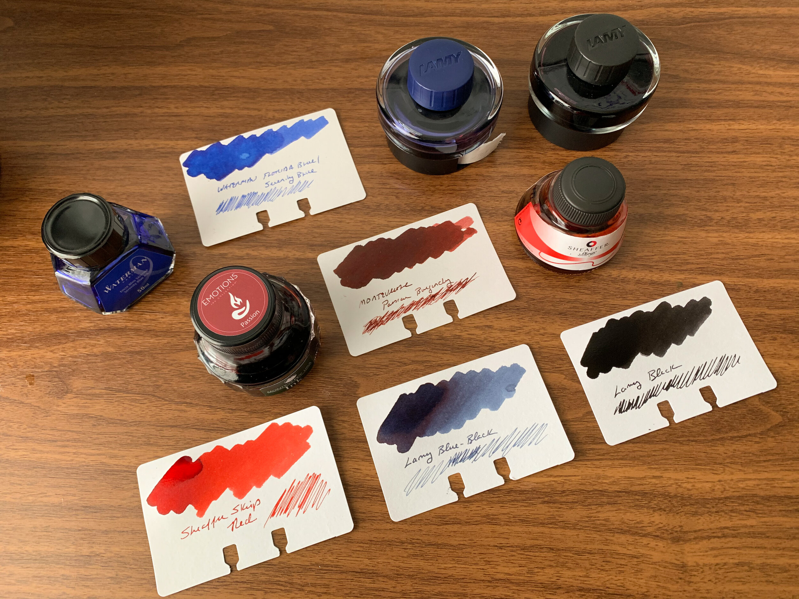

My Pen Blog
About
Resources
Articles
Sitemap
Home
Recommended articles and blogs about various stationery-related topics.
Articles
Choosing The Best Beginner Fountain Pen
On Iron Gall Inks
How to Refill an Ink Cartridge Using a Syringe
Hierarchies of Fountain Pen Friendly Paper
Blogs
Mountain of Ink
- Inks
JetPens Blog
- General Stationery
The Pen Addict
- Pens (General)
The Gentleman Stationer
- Pens (High-End)
